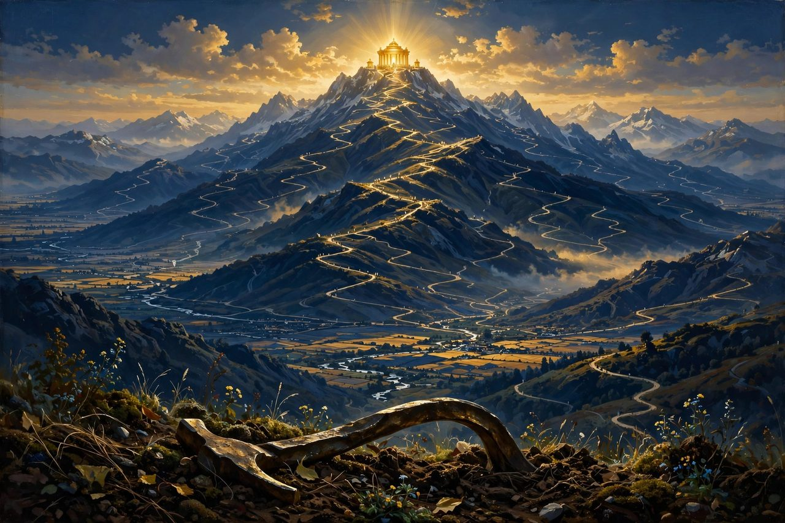
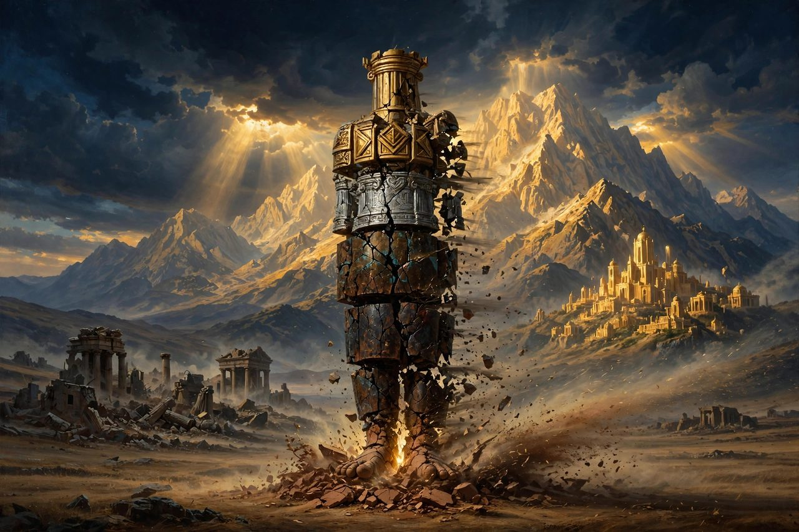
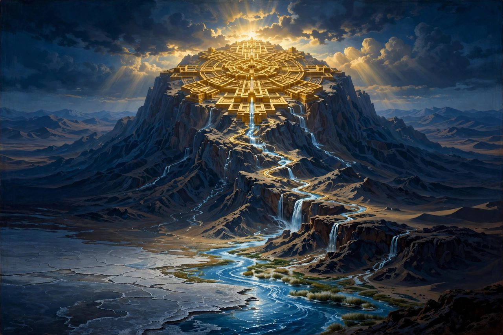
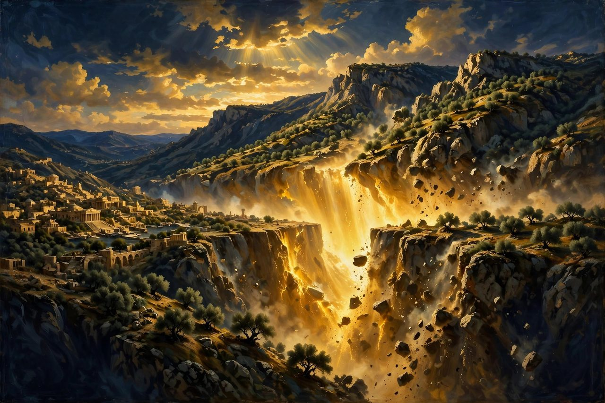
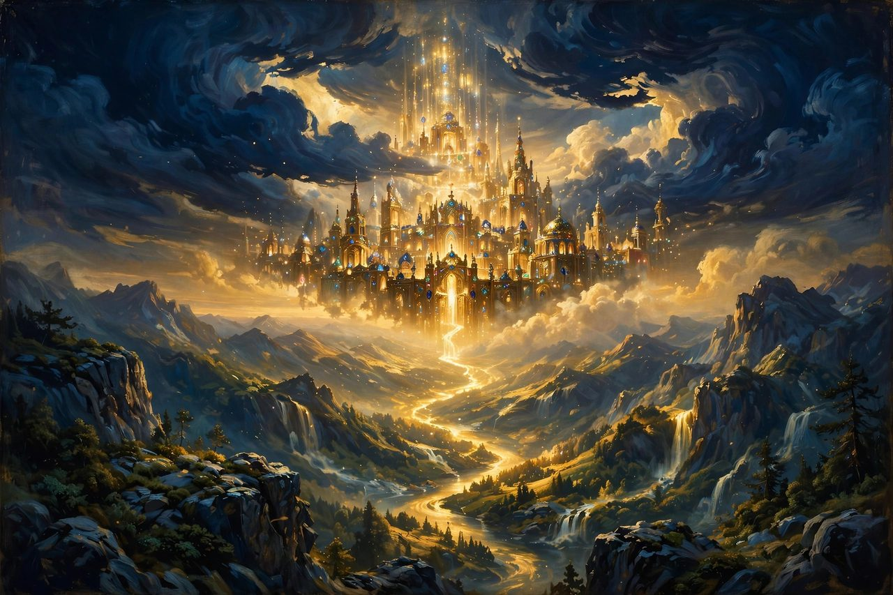
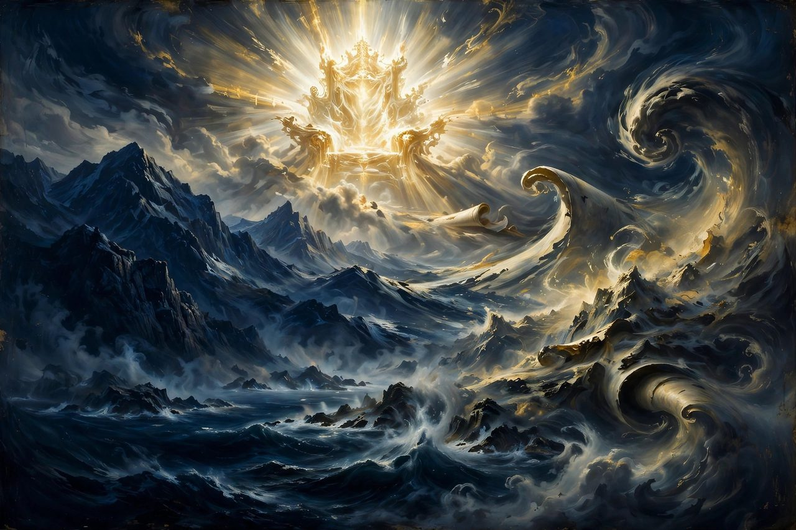

The mountains of Scripture do not end with the Ascension. The prophets saw mountains in the age to come: a mountain exalted above all others, a stone that grows into a mountain and fills the earth, a very familiar ridge outside Jerusalem splitting in two at the touch of God's feet. These are not decorations on the future — they are promises, and every one of them says the same thing: God's kingdom will not stay small, hidden, or contested forever.
The Mountain of the Lord's House Established
Scripture: Isaiah 2:2-4; Micah 4:1-3 The story: Both Isaiah and Micah saw the same vision, nearly word for word: "It shall come to pass in the latter days that the mountain of the house of the LORD shall be established as the highest of the mountains," and all nations shall stream up to it, saying, "Come, let us go up to the mountain of the LORD... that he may teach us his ways." From that mountain go forth the law and the word of the LORD, and the nations beat their swords into plowshares and learn war no more. The meaning: God's future is not the world escaping to heaven but the world streaming to God to be taught. Peace on earth is pictured not as the fruit of human progress but of the nations finally climbing the right mountain, to the right Teacher. What it points to: It points forward to Christ, the true temple and the true teacher, and to the church's mission — the stream of the nations has already begun wherever the gospel is preached. It exposes the human race as it is: we have climbed every mountain of politics, war, and self-rule, and still must be taught God's ways by God Himself.
The Great Mountain Filling the Earth

Scripture: Daniel 2:34-35, 44-45 The story: In Nebuchadnezzar's dream, a great statue of gold, silver, bronze, iron, and clay — the kingdoms of men — was struck on its feet by "a stone cut by no human hand." The statue shattered like chaff, and "the stone that struck the image became a great mountain and filled the whole earth." Daniel declared that the God of heaven would set up a kingdom that "shall never be destroyed" and "shall stand forever." The meaning: Every human empire, however golden its head, has feet of clay, and God's kingdom does not arrive by human manufacture — the stone is cut without hands. God alone builds what lasts forever. What it points to: It points to Christ, the stone the builders rejected, whose kingdom began the size of a rock small enough to hold and grows, by God's design, until it fills the earth. It also speaks to the human race in every age: whatever mountain we are building — nation, career, name — if it is man's work only, it will be chaff on the wind one day.Ezekiel's Very High Mountain

Scripture: Ezekiel 40:2 The story: In exile, in a vision, God set Ezekiel "on a very high mountain," on which was a structure like a city — a temple measured in extraordinary detail, court by court and gate by gate, by a man with a measuring reed. From that temple a river would flow that turns the Dead Sea fresh (Ezekiel 47), and the book closes with the city's new name: "The LORD Is There" (Ezekiel 48:35). Whether the vision pictures a literal future temple or the perfected dwelling of God with His people, interpreters have long debated; the vision's own climax is the name, not the architecture. The meaning: In exile, with the earthly temple in ruins, God showed His prophet that His dwelling with man was not finished — it was bigger than the one that burned. God's presence is not a fragile thing nations can destroy. What it points to: It points forward to Christ, who called His own body the temple, and to Revelation 21-22, where the river of life flows from God's throne and there is no temple, "for its temple is the Lord God the Almighty and the Lamb." The measured mountain of Ezekiel is a sketch; the reality is a city where God is simply there — and so are His people, forever.The Mount of Olives Split in Two

Scripture: Zechariah 14:4-5 The story: Zechariah prophesied the day of the LORD, when all nations gather against Jerusalem: "On that day his feet shall stand on the Mount of Olives that lies before Jerusalem on the east, and the Mount of Olives shall be split in two from east to west... so that one half of the mountain shall move northward, and the other half southward," opening a valley of escape for God's people. The prophecy ends: "Then the LORD my God will come, and all the holy ones with him." The meaning: When God returns, geography itself yields — the same ridge from which Jesus ascended will split at the touch of His feet. The God of Scripture is not a distant idea; He has a named destination, and He is coming in person. What it points to: It points forward to the second coming of Christ, joining the angels' promise in Acts 1:11 that Jesus will return "in the same way" to the same mountain He left. It points to the human condition with both warning and hope: nations will still be raging against God at the end — and God will still be making a way of escape through the middle of the mountain for His own.A Great, High Mountain and the New Jerusalem

Scripture: Revelation 21:10 The story: One of the angels carried John away in the Spirit "to a great, high mountain, and showed him the holy city Jerusalem coming down out of heaven from God." From that height John watched heaven's city descend — prepared as a bride, shining with the glory of God, with no temple, no sun or moon needed, and no night. The last mountain of the Bible is a vantage point, not a destination: what matters is the city, and the city comes down. The meaning: The whole story of mountains in Scripture lands here, upside down from where men expected. Humanity's instinct since Babel has been to climb up to God; the Bible ends with God coming down to man, bringing His finished city with Him. What it points to: It points forward to the believer's eternal home — not souls escaping earth, but heaven and earth made new, with God dwelling among His people and every tear wiped away. It answers Tenzing's mountain, and every human summit: the highest joy is not standing on top of the world, but being brought home by the God who descended to get us.The Mountains That Flee

Scripture: Revelation 6:14-16; Revelation 16:20 The story: At the opening of the sixth seal, "the sky vanished like a scroll being rolled up, and every mountain and island was removed from its place." Then the kings of the earth and the great ones hid in caves among the rocks, "calling to the mountains and rocks, 'Fall on us and hide us from the face of him who is seated on the throne, and from the wrath of the Lamb.'" At the seventh bowl the picture completes: "every island fled away, and no mountains were to be found" (Revelation 16:20). The meaning: The things men trust as permanent — mountains, the very symbols of immovable stability — will not stay put when God judges. There is a wrath of the Lamb, a phrase that joins the two things men try to keep apart: the gentleness of Jesus and the judgment of God, in one Person. What it points to: It points forward to the great leveling that makes way for the new heavens and new earth, when nothing old and broken remains to hide behind. And it points to the human race with solemn clarity: on that day men will beg the mountains for the hiding that only the Lamb's blood could give them freely now. The time to run to Christ is while He is still calling sinners to come — before the mountains are gone.← Previous part · Series index · Next part →
The Hope Connection
Meeting others where they are in the Name of Jesus — testimony and teaching on the hope that holds.